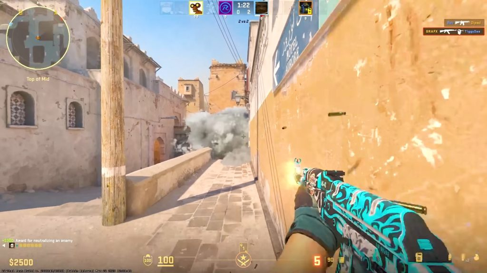
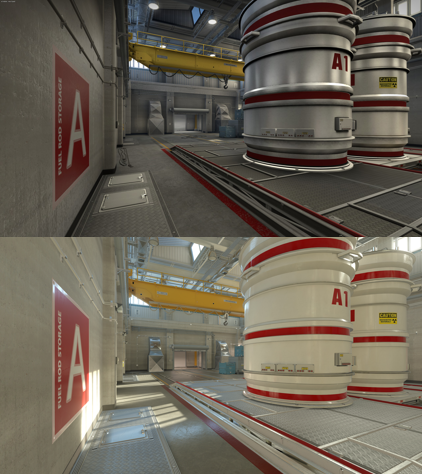
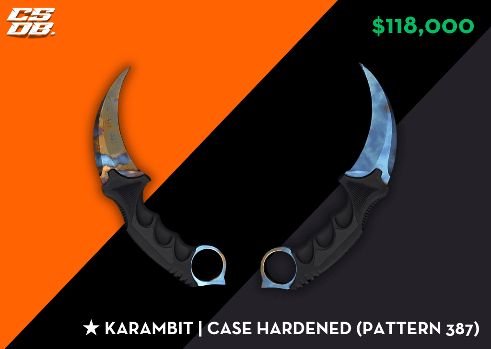
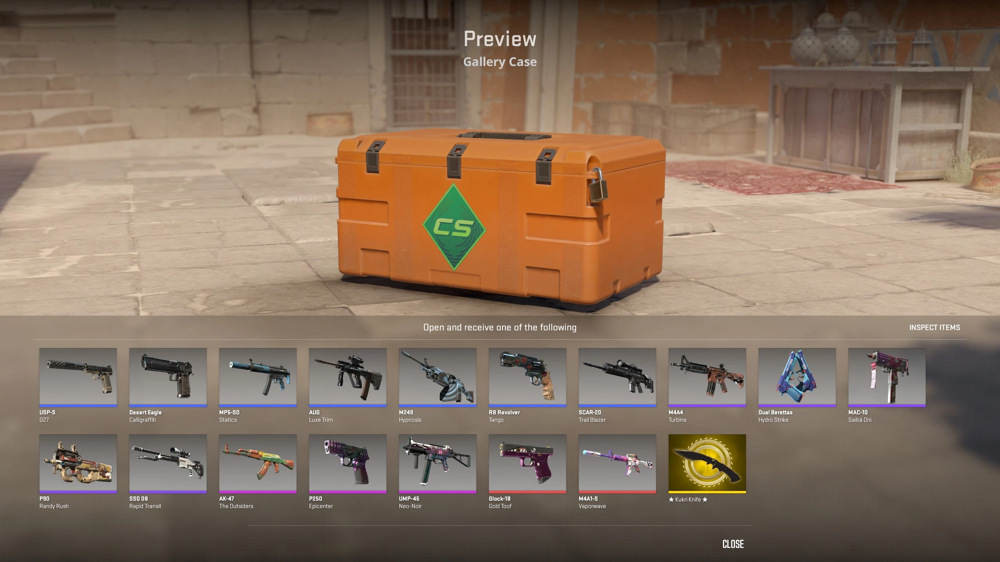

This icon is the one which got shown first to the people who watched the trailer of the new version of cs2

About the icon

The gameplay
This screenshot is from the map "Dust 2". A smoke is blocking the view from the player thus giving an advantage to the enemies. We can see the game's gui which shows the minimap on the left upper corner, down we can see from left to right the money, armour, hp, the team we're playing above the kill counter, the ammunition our gun has left and still have, and the items we have (in this chase a bomb and four grenades)

The map
The map you can see on the picture is the map "Nuke". This iconic map plays on a nuclear reactor. It's been a really big part of cs:go's history.

The skin
This openable, purchaseable, saleable skin is the "Karambit | Case Hardened" knife. All the weapons in the game can have all sorts of skins on them. You can open these skins with crates which you can purchase or get by the "Prime Drop". Most of the skins have patterns which depends which one you get is more or less valuable. The skins also have "floats" which indicates the skin's quality, the smaller the float the more valuable the skin.

The case
Every case in the game has unique skins in them. The most valuable item in the case is usually the golden which can be a knife or glove skin. With the recent feature valve added now you'll be able to rent skins which are in the cases for 7 days (but you don't get the golden item, this only applies to the new cases).